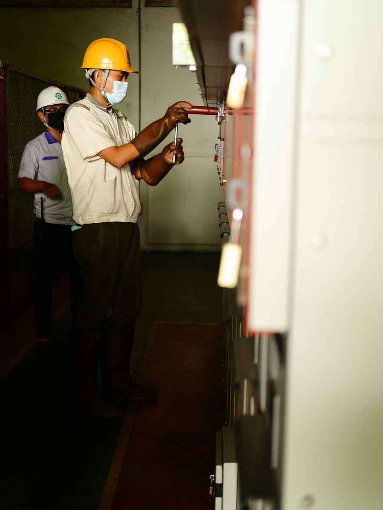
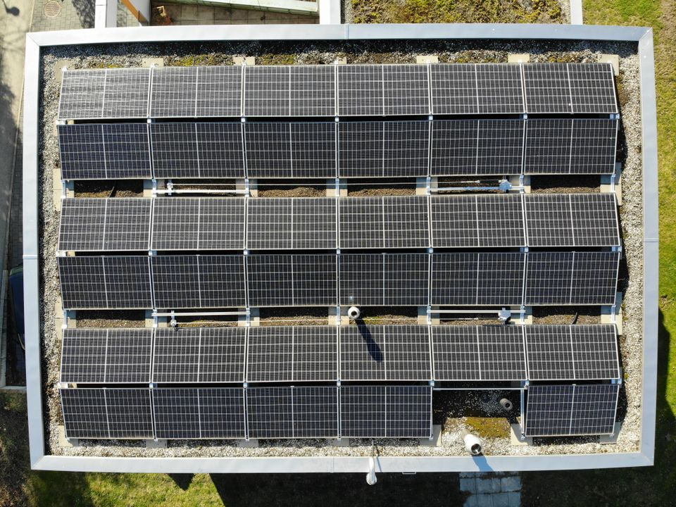
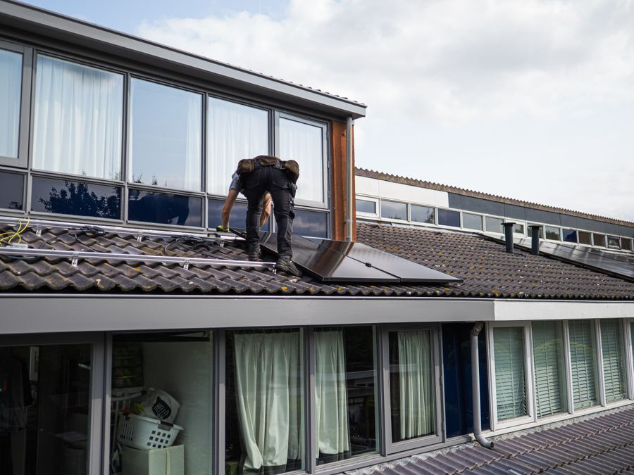

Các bước kiểm tra ban đầu khi biến tần không khởi động
Khung bài viết hướng dẫn kiểm tra nguồn, bus DC và tín hiệu điều khiển.
Đồng hành cùng khách hàng trong sửa chữa, bảo trì và xử lý sự cố thiết bị công nghiệp, hệ thống biến tần và năng lượng.


TĐ Technical Service tập trung vào hoạt động sửa chữa, bảo trì và hỗ trợ kỹ thuật cho các hệ thống công nghiệp và năng lượng. Chúng tôi hướng tới xử lý đúng nguyên nhân, minh bạch phương án và kiểm tra chất lượng trước khi bàn giao.
Các nhóm dịch vụ được tổ chức rõ ràng để khách hàng nhanh chóng tìm đúng chuyên môn cần hỗ trợ.

Kiểm tra, sửa chữa biến tần, bộ điều khiển và thiết bị truyền động công nghiệp.
Yêu cầu dịch vụ →Biến tần điều khiển tốc độ động cơ trong nhiều hệ thống sản xuất. Khi thiết bị báo lỗi hoặc hoạt động không ổn định, cần xem xét cả biến tần và điều kiện vận hành để lựa chọn phương án xử lý.
Thiết bị không lên nguồn, không nhận lệnh chạy, dừng khi mang tải hoặc hiển thị cảnh báo. Mã lỗi cần được đối chiếu theo đúng hãng và model thiết bị.
Ghi nhận mã lỗi, thông số động cơ, tải sử dụng và lịch sử sự cố. Kiểm tra tình trạng thiết bị, đánh giá khả năng sửa chữa, cài đặt thông số hoặc đề xuất thay thế phù hợp.
Gửi ảnh tem model, công suất, màn hình mã lỗi và mô tả thời điểm xảy ra lỗi. Không tự tháo thiết bị hoặc chạm vào đầu nối điện; việc kiểm tra bên trong cần do kỹ thuật viên thực hiện.
Kiểm tra bên ngoài, theo hướng dẫn đúng model. Các bước dưới đây không thay thế việc chẩn đoán kỹ thuật.
Dừng máy theo quy trình vận hành. Quan sát bên ngoài và dọn vật đang che cửa thông gió của tủ, không mở tủ hoặc chạm thiết bị. Để kỹ thuật kiểm tra nếu cảnh báo còn xuất hiện.
Người vận hành kiểm tra trạng thái cho phép chạy trên HMI theo hướng dẫn của máy. Không đổi chế độ điều khiển hoặc đấu tắt tín hiệu liên động.
Chụp mã lỗi và tem model, ghi thời điểm phát sinh. Không reset liên tục hoặc tự tăng giới hạn dòng; cần tìm nguyên nhân trước khi chạy lại.
Nếu có mùi khét, khói, tia lửa hoặc tiếng động bất thường, ngừng sử dụng, giữ khoảng cách và gọi kỹ thuật. Không mở tủ điện hoặc tháo thiết bị.
Tham khảo: Schneider Electric: cảnh báo quá nhiệt.

Hỗ trợ inverter hòa lưới, hybrid, hệ thống pin lưu trữ và BMS.
Yêu cầu dịch vụ →Hệ thống điện mặt trời cần được kiểm tra khi inverter báo lỗi, ngừng phát điện hoặc sản lượng thay đổi bất thường so với điều kiện vận hành tương đương. Đánh giá thực tế giúp xác định phạm vi bảo trì và sửa chữa.
Inverter không hoạt động, liên tục mất kết nối hoặc xuất hiện thông báo lỗi. Sản lượng giảm cần được xem xét cùng thời tiết, tình trạng che bóng và dữ liệu giám sát.
Tiếp nhận dữ liệu vận hành, model inverter và lịch sử cảnh báo. Kiểm tra inverter cùng các hạng mục liên quan trong phạm vi thống nhất, sau đó đề xuất bảo trì hoặc xử lý thiết bị.
Gửi ảnh tem inverter, mã lỗi, công suất hệ thống và ảnh hoặc dữ liệu từ ứng dụng giám sát. Không tự tháo đầu nối hay can thiệp phần điện DC; tấm pin có thể vẫn tạo điện khi có ánh sáng.
Kiểm tra bên ngoài, theo hướng dẫn đúng model. Các bước dưới đây không thay thế việc chẩn đoán kỹ thuật.
Kiểm tra Internet tại nhà và trạng thái router. Nếu vừa đổi tên hoặc mật khẩu Wi-Fi, kết nối lại qua ứng dụng chính thức theo hướng dẫn đúng model; không cần đóng cắt nguồn inverter chỉ để sửa mạng.
So sánh dữ liệu vào thời điểm có nắng tương đương, xem thời tiết và bóng che từ vị trí an toàn. Không leo mái hoặc tự tháo tấm pin để kiểm tra.
Lưu mã lỗi và thời điểm; gửi ảnh cho kỹ thuật. Không tự rút giắc DC hay bật tắt aptomat liên tục. Offline trên ứng dụng chưa đủ để kết luận inverter ngừng phát điện.
Nếu có mùi khét, khói, tia lửa hoặc tiếng động bất thường, ngừng sử dụng, giữ khoảng cách và gọi kỹ thuật. Không mở tủ điện hoặc tháo thiết bị.
Tham khảo: Fronius: hỗ trợ Solar.web.

Kiểm tra hệ thống điều khiển, xử lý sự cố và bảo trì thiết bị.
Yêu cầu dịch vụ →Thang máy dừng hoạt động, đóng mở cửa bất thường hoặc báo lỗi cần được kiểm tra theo đúng tình trạng thực tế. Việc ghi nhận thời điểm xảy ra sự cố và thông báo trên màn hình giúp kỹ thuật viên có cơ sở đánh giá ban đầu.
Thang máy dừng tầng không chính xác, vận hành gián đoạn hoặc xuất hiện tiếng động bất thường. Cửa không đóng mở ổn định, bảng gọi tầng không phản hồi hoặc hệ thống hiển thị mã lỗi.
Kiểm tra hệ thống điều khiển, tín hiệu cửa và các thiết bị liên quan; xác định hạng mục cần sửa chữa hoặc bảo trì. Phạm vi công việc và phương án xử lý được trao đổi sau khi đánh giá thiết bị.
Gửi tên hãng, loại thang, mã lỗi và hình ảnh bảng điều khiển nếu có thể ghi nhận an toàn. Khi có sự cố, ngừng sử dụng và liên hệ đơn vị kỹ thuật; không tự mở cửa tầng hoặc can thiệp tủ điện.
Kiểm tra bên ngoài, theo hướng dẫn đúng model. Các bước dưới đây không thay thế việc chẩn đoán kỹ thuật.
Đứng gọn trong cabin, đưa hành lý ra khỏi vùng cửa và chờ cửa đóng tự động. Không dùng tay giữ hoặc cạy cửa.
Khi cabin dừng đúng tầng và cửa mở bình thường, giảm số người hoặc hàng hóa theo tải trọng ghi trên thang.
Thử bấm một lần và chờ. Nếu vẫn không hoạt động, dùng lối đi khác và báo quản lý. Nếu mắc kẹt, dùng nút báo động hoặc liên lạc trong cabin; không tự thoát ra.
Nếu có mùi khét, khói, tia lửa hoặc tiếng động bất thường, ngừng sử dụng, giữ khoảng cách và gọi kỹ thuật. Không mở tủ điện hoặc tháo thiết bị.
Tham khảo: Hướng dẫn an toàn KONE.

Phân tích và sửa chữa bo mạch nguồn, mạch điều khiển và linh kiện công suất.
Yêu cầu dịch vụ →Ảnh tư liệu, không phải hình công trình do TĐ thực hiện.
Năng lực được thể hiện qua quy trình chẩn đoán, công cụ kiểm tra và kết quả thực tế.
Thu thập hiện tượng, kiểm tra tín hiệu và phân tích nguyên nhân gốc rễ.
Kiểm tra nguồn, mạch điều khiển, linh kiện bán dẫn và mạch công suất.
Đánh giá hoạt động thiết bị sau sửa chữa theo điều kiện kiểm tra phù hợp.
Hỗ trợ inverter, pin lưu trữ, BMS và cấu hình vận hành.
Kiểm tra định kỳ, phát hiện bất thường và đề xuất phương án phòng ngừa.
Tra cứu manual, datasheet, hướng dẫn và kiến thức chuyên ngành.


Tham khảo: Hướng dẫn an toàn KONE.
Tham khảo: Schneider Electric: cảnh báo quá nhiệt.
Tham khảo: Fronius: hỗ trợ Solar.web.
Ghi nhận model, serial, hiện tượng và hình ảnh.
Kiểm tra và xác định nguyên nhân sự cố.
Thống nhất giải pháp, chi phí và thời gian.
Sửa chữa, kiểm tra và ghi nhận kết quả.
Bàn giao thiết bị và thông tin bảo hành.
Tra cứu manual, datasheet, sơ đồ và hướng dẫn kỹ thuật.
KONE
Schneider Electric
Fronius
Các bài viết chuyên môn giúp khách hàng hiểu thiết bị và giúp kỹ thuật viên tra cứu kinh nghiệm.
Khung bài viết hướng dẫn kiểm tra nguồn, bus DC và tín hiệu điều khiển.
Giới thiệu các dữ liệu cần thu thập trước khi kết luận nguyên nhân.
Nguyên tắc đo kiểm an toàn và đối chiếu datasheet linh kiện.
ĐỒNG HÀNH SAU SỬA CHỮA
Rõ hạng mục thực hiện.
Rõ hồ sơ bàn giao.
Phạm vi, điều kiện và thời hạn bảo hành được ghi trên phiếu sửa chữa hoặc biên bản bàn giao của từng thiết bị.
Khi hiện tượng lỗi tái diễn, cung cấp mã phiếu và mô tả tình trạng để được tiếp nhận kiểm tra.
Linh kiện thay thế và điều kiện bảo hành tương ứng được xác nhận trong hồ sơ dịch vụ. Chi phí vận chuyển, tháo lắp hoặc phát sinh được trao đổi theo từng trường hợp.
Chuẩn bị mã phiếu, model hoặc serial, hình ảnh cảnh báo và thời điểm xuất hiện lỗi. Kỹ thuật viên kiểm tra trước khi xác định phương án xử lý và phạm vi bảo hành.
Gửi yêu cầu bảo hành ↗Tiếp nhận thông tin → đối chiếu hồ sơ → kiểm tra tình trạng → thông báo kết quả và phương án → thực hiện theo nội dung thống nhất → bàn giao.
Trường hợp ngoài phạm vi hoặc hết thời hạn bảo hành sẽ được tư vấn và báo giá trước khi thực hiện.
THÔNG TIN TRƯỚC KHI GỬI THIẾT BỊ
Hình ảnh giúp đánh giá ban đầu. Báo giá sửa chữa cần dựa trên tình trạng kiểm tra thực tế và phạm vi công việc; chi phí kiểm tra nếu có sẽ được trao đổi trước.
Thời gian dự kiến phụ thuộc tình trạng, linh kiện và điều kiện kiểm tra. Thời hạn bảo hành áp dụng được ghi cụ thể trên báo giá hoặc phiếu bàn giao.
Bạn có thể gửi thông tin để được đánh giá khả năng tiếp nhận. Phương án và chi phí sẽ được trao đổi trước khi sửa chữa.
Cung cấp model, mã lỗi và hình ảnh để việc tiếp nhận kỹ thuật được nhanh chóng hơn.
Liên hệ để trao đổi nhu cầu sửa chữa, bảo trì hoặc hỗ trợ kỹ thuật.